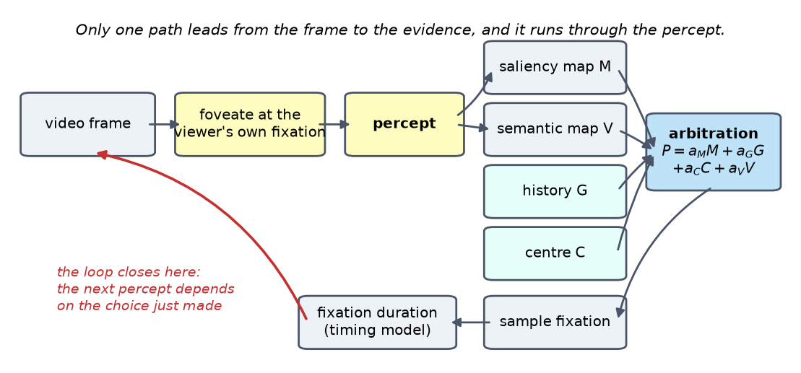
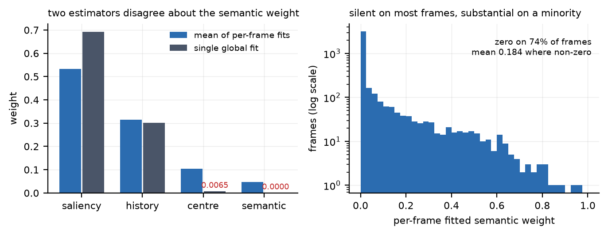
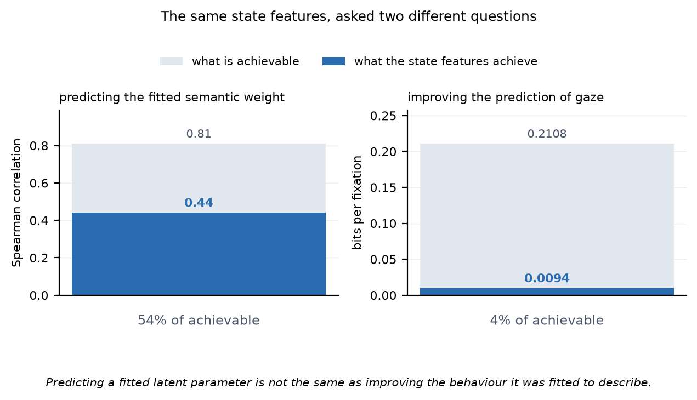
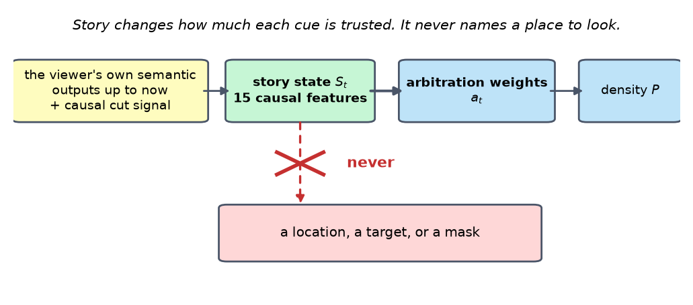
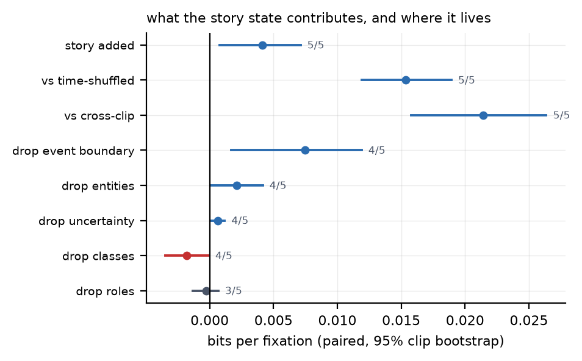
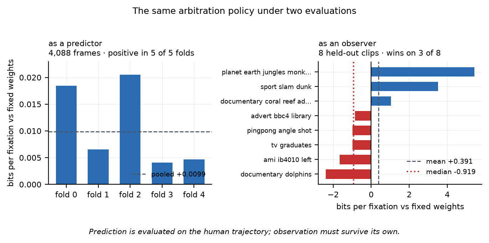
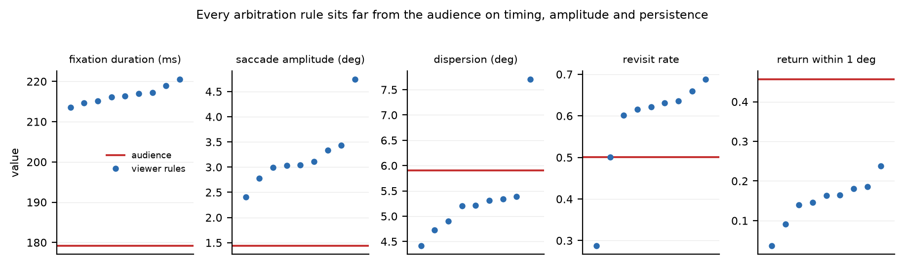

MRes Creative Computing, University of the Arts London. Element 1, 60%. Draft, 2026-09-09. Target 7,000 words. Harvard referencing.
Citation status. Every reference in this draft has been checked against its primary source and is listed in section 7. Two fields remain marked with a dagger, both page ranges that no open source displayed; they must be confirmed from the publisher record before submission. Nothing has been guessed.
Target 220 words. Drafted.
Computational models of visual attention are almost always evaluated as predictors: given a frame a person looked at, how much probability does the model place where they looked. This thesis asks a different question. It builds JOY, a closed-loop artificial viewer that receives only a foveated percept, combines bottom-up saliency, semantic guidance from a vision-language model, oculomotor history and a centre bias, selects its own fixation, advances its own clock, and then perceives the consequences of its own choice. Across seven experiments on 75 film clips with 223 observers and on a task-directed visual search corpus, the central result is a dissociation. A low-capacity state-dependent arbitration policy improves the prediction of human fixation locations by 0.0094 bits per frame, reproducibly in all five folds, but that advantage does not survive when the same policy drives its own scanpath: its median advantage over fixed weights becomes negative and it wins on three of eight held-out clips. Increasing the policy's capacity makes it worse on the film data. Transfer to task-directed visual search is reported separately and is not yet settled. Semantic and narrative mechanisms each contribute a few thousandths of a bit, while the viewer's fixation durations, saccade amplitudes and return rates remain far from human. Human-like artificial viewing is therefore not reducible to better semantic gaze prediction; the binding constraints lie in perceptual access, temporal continuity and motor dynamics.
Target 800 words. Drafted.
Where a person looks next is one of the few continuously observable traces of what they are attending to, and modelling it has been a productive problem for three decades. The dominant formulation is prediction. A model receives an image or a frame, produces a probability density over locations, and is scored against where human observers actually fixated. Progress on that formulation has been substantial and is well documented by public benchmarks (Kümmerer, Wallis and Bethge, 2018; MIT/Tübingen Saliency Benchmark), and comparable evaluations now exist for sequences of fixations as well as for aggregate density (Kümmerer and Bethge, 2021).
There is a second problem that is easy to mistake for the first. Rather than predicting the gaze of a person who is watching, one may attempt to construct something that watches: an artificial observer with its own limited perception, its own history, its own timing, and its own consequences. The two problems share a metric and almost nothing else. A predictor is always handed the human's next input, because it is scored on frames the human actually reached. An observer is not. It must generate a fixation, live with it, and perceive the world from wherever that fixation left it. Errors in a predictor are independent across frames; errors in an observer compound through the percept.
This thesis argues that the distinction is not merely conceptual, and demonstrates it empirically: a policy that reliably improves prediction can fail to improve observation, in the same data, with the same weights.
Two developments make the second problem tractable and the confusion between the two costly.
The first is that semantic guidance became available in a usable form. Vision-language models can be asked what a scene contains and where, and recent work reads gaze from them directly by treating fixation coordinates as vocabulary tokens (Agrawal, Bethge and Kümmerer, 2026). The present system takes a different route, converting a grounded region into a smoothed spatial prior that competes with other cues under an explicit weight, which makes each cue's contribution separately measurable. Either route encourages an intuitive account of gaze in which understanding drives looking: the model knows what matters, so it looks there. The account is appealing, and the present work finds that its contribution, while real, is smaller than the intuition suggests and does not scale the way the intuition predicts.
The second is that a vision-language model queried on a whole frame is an omniscient observer, with access to detail no foveated retina delivers. A system that uses one without constraining its input has quietly granted its viewer perfect peripheral vision, and any resulting resemblance to human behaviour becomes difficult to interpret. Constraining the input is what makes such a system an observer rather than an annotator.
JOY is a closed loop. At each step the current frame is foveated at the viewer's own current fixation, producing a percept that is sharp at the centre and progressively degraded with eccentricity, following the standard psychophysical account in which minimum resolvable size grows with eccentricity (Geisler and Perry, 1998). Both a bottom-up saliency model and a vision-language model are run on that percept, not on the frame. Their outputs are combined with an oculomotor history term derived from the viewer's own previous fixations and a centre bias, under weights that may be fixed or state-dependent. A fixation is drawn, a duration is assigned by a model of fixation timing (Nuthmann et al., 2010), the clock advances, and the loop repeats from the new percept. Nothing in the loop reads a human fixation at inference time.
That construction makes two things measurable that a predictor cannot measure: what happens when a model must survive its own trajectory, and how the resulting behaviour compares to human viewing on dimensions that likelihood does not express, such as fixation duration, saccade amplitude, dispersion and return rate.
Existing work supplies each component and rarely the interaction. Saliency models are evaluated on aggregated fixation density; scanpath models generate sequences but usually from unrestricted input; foveated rendering is mature but seldom placed inside an attention model's evaluation loop; and semantic contributions are typically demonstrated by adding a map and reporting a likelihood gain, which, as this thesis shows, is not evidence that the same addition improves an observer.
The gap is therefore not a missing component. It is the absence of an account of how these components interact when the system must act, and of what the standard metric fails to detect about that interaction.
Four questions follow, stated in full in section 3 alongside the experiment that answers each. They ask what it takes to build such an observer and what constrains it; what semantic, bottom-up and oculomotor guidance each contribute and whether that depends on the viewer's state; what limited perceptual access and temporal history change; and whether narrative state can contribute without granting the viewer omniscient access to the scene.
Four contributions, stated at the strength the evidence supports and developed in section 6.
The thesis does not claim to have built a human-like observer. It reports where the attempt succeeded, where it failed, and what the failures constrain.
Target 1,250 words. Drafted.
The standard evaluation of an attention model is prediction against recorded human fixations. The MIT/Tübingen benchmark formalises this, and its authors have shown that the choice of metric alone reorders model rankings, which motivated a probabilistic formulation in which a model predicts a density and metric-specific maps are derived from it (Kümmerer, Wallis and Bethge, 2018). The resulting measure, information gain, expresses in bits per fixation what a model knows beyond an image-independent baseline.
Scanpath models extend this to sequences. The most careful comparison of them evaluates each model on how well it predicts each fixation given the preceding human scanpath (Kümmerer and Bethge, 2021). This is the right protocol for a predictor and it is worth being precise about what it does not test. At every step the model is returned to the human's trajectory. It is never required to proceed from a location it chose itself, and so it is never exposed to the consequences of its own errors. The most recent vision-language approach to scanpaths follows the same protocol, predicting fixation coordinates as vocabulary tokens (Agrawal, Bethge and Kümmerer, 2026). Nothing in this literature is wrong; it simply answers a question about prediction, and the question about observation remains open.
Any claim about semantic guidance is a claim about what remains after a large non-semantic structure has been accounted for. Observers fixate the centre of a display far more than image content predicts, and Tatler (2007) showed that this central bias survives manipulations of both motor bias and low-level feature distribution, so it cannot be dismissed as an artefact of either. In dynamic scenes the dominant regularity is stronger still: the gaze of many viewers clusters tightly on the same locations, and that clustering is predicted by motion (Mital et al., 2011). This attentional synchrony is the phenomenon the present corpus was assembled to study, and it sets the terms of the problem. A semantic cue is not competing for gaze in a vacuum; it competes against a centre bias, an oculomotor history and a motion signal that between them already account for most of the structure.
Henderson and Hayes (2017) introduced meaning maps, built by having people rate the semantic richness of overlapping scene patches, and reported that when meaning and salience were decorrelated only meaning explained unique variance in attention. The result was widely read as settling the question in favour of meaning.
It did not. Pedziwiatr et al. (2021a) reported that meaning maps and deep saliency models alike are insensitive to image meaning when predicting fixations, meaning maps not predicting gaze better than a saliency model built on semantically neutral high-level features. An exchange followed in the same journal, with a reply from Henderson and colleagues and a counter-reply (Pedziwiatr et al., 2021b), and it is not settled. The disagreement matters here for a specific reason. It establishes that a map which looks semantic, and which improves prediction, may be doing so through high-level image structure rather than through meaning. Any project that adds a semantic channel and reports a likelihood improvement inherits that ambiguity, including this one. The present work does not resolve the debate. It contributes a measurement from a different direction: a semantic channel derived from a vision-language model's grounded region rather than from human ratings, in video rather than stills, under a foveated percept rather than full-frame access.
Human spatial resolution falls sharply with eccentricity, and foveated imaging has modelled this for decades, typically by letting the minimum resolvable size grow linearly with eccentricity (Geisler and Perry, 1998). The technique is mature in rendering and compression. It is much less often placed inside the evaluation loop of an attention model, where it changes the question being asked: a model given the whole frame at full resolution is deciding where to look with information no human observer possessed at that moment.
This is not a minor idealisation when the semantic channel is a vision-language model. Such a model queried on a full frame is an omniscient observer of the scene. Whatever behavioural similarity to humans a system built on it displays, the similarity cannot be attributed to human-like information access, because the access was not human-like.
There is also a prior result on how much foveation buys, and it is sobering. The authors of the search corpus used here benchmarked models on images transformed to approximate a foveated retina, and found the foveated variants performed negligibly differently from the high-resolution ones for their inverse-reinforcement-learning model, while foveation actively impaired their object detector. They concluded that it made little difference whether the state accumulated high-resolution visual information, and that fine-grained retinal blur mattered less than a basic foveal-window constraint (Chen et al., 2021). The present work reaches the same conclusion by a different route and on different material, which is worth more than either result alone.
Where to look and how long to look are separate problems with separate models. CRISP treats fixation duration as the output of a timing mechanism that can be modulated but is not reducible to target selection (Nuthmann et al., 2010). A system that selects targets well may still produce an unhuman distribution of durations, and duration is one of the dimensions on which the present viewer is furthest from human behaviour.
For narrative material the relevant framework is the Scene Perception and Event Comprehension Theory, which separates front-end processes occurring within a single fixation, namely attentional selection and information extraction, from back-end processes operating across fixations to build and update event models (Loschky et al., 2020). The separation is directly useful for the present architecture: the arbitration of competing cues at a single fixation is a front-end process, while an event or story state accumulated across fixations is a back-end one, and the interesting question is how the second influences the first. SPECT also makes clear why a narrative state should not be permitted to name a location. Comprehension does not tell a viewer where to look; it changes what the viewer expects, and expectation modulates selection.
Each component of an artificial observer has an established literature: saliency, semantic guidance, scanpath generation, foveated perception, fixation timing, and event comprehension. What is missing is an account of their interaction under the constraint that the system must act. Three specific absences follow.
First, evaluation is almost universally conducted on the human trajectory, so nothing in the standard protocol can detect a mechanism that improves prediction while degrading autonomous behaviour. Second, semantic contributions are typically demonstrated by adding a map and reporting a likelihood gain, a design that the meaning-map exchange has already shown to be weakly diagnostic. Third, perceptual constraint is usually applied to the stimulus or to the renderer rather than to the model's own evidence, so systems that are described as foveated are frequently not foveated where it would matter.
This thesis addresses the interaction directly by building an observer that must survive its own choices, and by evaluating it both as a predictor and as an agent.
Target 300 words. Drafted.
Four questions, each paired with the experiment that answers it and with the form the answer may take. Each is answerable from evidence obtained, including where that answer is negative.
RQ1. What does it take to build a closed-loop artificial viewer that behaves like a human observer, and which components most constrain that behaviour? Answered by Experiment 6, in which the viewer generates its own scanpaths on held-out clips under nine arbitration rules, and by the behavioural comparison of its fixation durations, saccade amplitudes, dispersion and return rates against the audience on the same clips and window. The answer is expected to name a constraint rather than a recipe.
RQ2. What is the relative contribution of semantic, bottom-up and oculomotor guidance to gaze target selection, and does that contribution depend on the state of the viewer? Answered by Experiment 1, which fits the four-source mixture per frame and as a single global weight set, and by Experiment 2, which tests whether a state-dependent weight predicts the fitted semantic weight and whether using it improves gaze prediction. These are separate questions and the thesis reports them separately, because the answers differ.
RQ3. How do constrained perceptual access and temporal history affect the emergence of human-like scanpath behaviour? Answered by Experiment 4, a paired same-frame comparison of fitted weights with and without foveation, by the unfoveated controls in Experiment 7, and by the history-ablated rule in Experiment 6.
RQ4. Can narrative and event state contribute to human-like viewing without granting the viewer omniscient access to scene content? Answered by Experiment 5, which builds a causally audited event state that enters gaze only through arbitration, and by the memory and detector analyses that test whether selective access to remembered content is achievable on this perception stack.
Target 1,600 words. Drafted.

Figure 1. The Artificial Viewer as a closed loop. The frame is foveated at the viewer's own current fixation and both evidence models run on the resulting percept, so no component sees the full-resolution frame. The four densities are combined under weights that may be fixed or state-dependent, a fixation is sampled, a duration is drawn, and the red arrow closes the loop: the next percept is determined by the choice just made. This is the property a prediction protocol cannot test.
At each step the viewer holds a current fixation and a clock. The current video frame is foveated at that fixation to produce a percept. Two evidence maps are computed on the percept: a bottom-up saliency map M and a semantic map V derived from a vision-language model's grounded region. Two further sources are formed without reference to the image: a history term G built from the viewer's own recent fixations, and a fixed centre bias C. All four are probability densities on a 100 by 100 grid over the frame, and they are combined as
P(x, y) = a_M M + a_G G + a_C C + a_V V, with the weights on the simplex.
A fixation is sampled from P, a duration is drawn from a fixation-timing model, the clock advances, and the loop repeats from the new percept. No human fixation is read at inference time; the history term is populated from the viewer's own previous choices, which is recorded on every generated record so the property can be checked rather than assumed.
The mixture form is deliberate. It keeps every cue's contribution separately identifiable as a scalar weight, which a single fused network would not, and it makes the arbitration hypothesis expressible: the weights may be fixed, or a function of the viewer's state.
The film corpus is DIEM, a public collection of video clips with eye-tracking from many free
viewing observers, assembled to study the clustering of gaze in dynamic scenes (Mital et al.,
2011). The canonical dataset built from it, avds_v1, holds 4,492 sampled frames from 75 clips
across 73 source videos, with 4,619,922 identified fixation samples from 223 observers. Every
frame carries a saliency map; 4,370 carry at least one semantic region, and 260 frames, 5.8%,
carry more than one. Every frame has at least eight observers. A weight vector was fitted for
4,101 frames, the remainder having no usable semantic region.
The dataset is validated by 45 named tests covering schema conformance, foreign keys, uniqueness, timestamp and shot bounds, map normalisation, region geometry, weight-simplex constraints, leakage, reproducibility and coverage. All required tests pass. Two genuine defects were found by these tests rather than by inspection and were fixed before any analysis: clips whose variants had been assigned to different folds, and semantic regions extending outside the frame or covering less than one grid cell, which are now clipped and flagged.
Acuity is modelled as falling with eccentricity from the current fixation, following the standard psychophysical account (Geisler and Perry, 1998), across a 33.4 degree field of view. The percept preserves frame dimensions; only the spatial detail changes. Critically, both evidence models see this percept and not the source frame. This is what prevents the vision-language model from acting as an omniscient annotator, and it is the difference between a system that is described as foveated and one that is foveated where it matters.
Bottom-up. M is produced by an audiovisual saliency model designed for video, which ingests a stack of consecutive frames and an audio spectrogram. Applied to a single still it degenerates, because its motion encoder sees no motion; this is stated in the project's own design record and is quantified in Experiment 7, where it becomes a limitation of the transfer study rather than a silent assumption.
Semantic. V is produced by prompting a vision-language model to ground a target in the percept and returning a bounding box. Each valid region is converted to a unit-mass map smoothed with a Gaussian of 0.25 degrees, and where a frame yields several regions the maps are averaged, so each region contributes equal mass and one semantic claim. Refusals and degenerate regions produce no V and are recorded as such. For film the prompt is free-viewing rather than a search task, following the constraint that films are watched without a target.
G is a density over the viewer's own recent fixation positions, and its effective lag was tuned on training data only. C is a fixed centre-weighted density, included because the central bias is a large and well-documented component of scene viewing that survives control of both motor bias and image features (Tatler, 2007), and omitting it would attribute its structure to another cue.
Three formulations are compared. Fixed weights are a single vector fitted on training clips. State-dependent weights are produced by a policy over a small set of features computable at the moment of the fixation, including the log area of the semantic region, the enrichment of the history term, the entropy and enrichment of the saliency map, and the time since the last shot cut. Per-frame fitted weights are obtained by expectation-maximisation against the audience density and are used as an analysis target, never as a model, since they require the human data they would be predicting.
The story state is fifteen features computed from the viewer's own semantic outputs up to the current time, plus a shot-cut signal: entity class, prompt role, distinct recent entity classes, persistence, continuity, novelty, uncertainty, an event-boundary indicator, cut rate and scene age. It is audited for causality by rebuilding it with all future rows truncated and confirming the result is identical, and by confirming that no human fixation enters it.
The state enters gaze only through the arbitration weights. It never produces a map, a target or a mask. This follows the front-end and back-end separation of the Scene Perception and Event Comprehension Theory (Loschky et al., 2020): comprehension accumulated across fixations does not tell a viewer where to look, it changes what the viewer expects, and expectation modulates selection within a fixation.
A second, richer scene state from an offline narrative pipeline was tested and rejected for gaze use: under an availability rule that admits information only once it could causally exist, its scene descriptions arrive between 23.8 and 115.5 seconds after the events they describe.
COCO-Search18 (Chen et al., 2021) provides task-directed visual search on still images with a named target: ten observers searching for each of eighteen target categories across 6,202 images, yielding roughly 300,000 search fixations. Each scanpath step is converted into one example: the percept foveated at the human's fixation, M and V computed on that percept, and the human's next fixation as the label. Unfoveated controls are computed on every eighth trial so the effect of foveation on each channel is measured rather than assumed. The held-out split yields 7,697 examples from 2,998 trials over 313 images and all ten observers, with 375 control trials, and the vision-language model refuses on 0.6% of steps while grounding the target at a median intersection over union of 0.855 against the annotation.
Folds are formed at the level of the source video, not the clip, so that variants of the same video cannot straddle a fold. The validator checks this directly. On the transfer corpus the splits are the corpus's own; because a small number of images appear in both, every held-out row on a shared image is dropped before scoring, and because all observers appear in both splits an observer-disjoint evaluation is run alongside the standard one.
The primary metric is log-likelihood of the observed fixation under the model's density, expressed in bits above a uniform baseline. This is not the convention of the saliency benchmarks, which report information gain above an image-independent centre bias (Kümmerer, Wallis and Bethge, 2018); figures here are therefore not directly comparable with published information-gain values, and the baseline is stated wherever a figure in bits appears.
Comparisons between models are paired over the rows both models scored and bootstrapped over the grouping unit, clips for the film experiments and trials for the transfer experiment. Every pooled interval is reported with per-fold or per-clip agreement, because folds partition clips and an effect concentrated in one fold can still resample as consistently signed. Where a model requires epoch selection, that selection is made on an inner development split carved out of the training data; the held-out set is scored once.
No human data was collected for this project. Both corpora are established public research datasets, used within their terms, and no participant is identifiable in any output: gaze is used only in aggregate or as anonymised per-observer traces already distributed with the corpora. The film material is copyright and no frames of it are reproduced beyond what is necessary for figures. The vision-language model is a pretrained third-party system whose training data and biases are not fully documented, which bounds the interpretability of the semantic channel and is stated as a limitation rather than assumed away.
The dataset store is layered and content-addressed, with deterministic record identifiers, schema-driven validation and a build report recording the provenance of every source run. Analyses read from that store rather than from live model calls, so no result depends on re-running a model. Random seeds are fixed and recorded. Every generated record carries the identity of the model, the weights, the arbitration rule and the source of its history, which is what allows the causality and no-leakage claims above to be checked rather than trusted.
Target 1,900 words. Experiments 1 to 6 drafted; Experiment 7 pending the completion of its builds.
All film figures are bits per fixation above a uniform baseline, paired over the rows both models scored and bootstrapped over clips. Pooled intervals are reported with the number of folds agreeing in sign, because folds partition clips and an effect concentrated in one fold can still resample as consistently signed.
Figure 2. Two real frames through the whole pipeline. For each frame, from left: the frame with the vision-language model's grounded box, the semantic density derived from it, the bottom-up density, the competition field, the audience's density, the foveated percept, and the bottom-up density recomputed on that percept. The top frame's box covers 2% of the image and its fitted semantic weight is 0.94; the bottom frame's box covers 53% and its weight is 0.00. The distribution behind that contrast is Figure 3b.

Figure 3b. Two estimators of the semantic weight, and why they disagree. Left: the mean of the per-frame fits beside a single global weight vector fitted to maximise held-out likelihood, which assigns the semantic map 0.0000. Right: the distribution of the per-frame semantic weight on a logarithmic count axis. It is zero on 74% of frames and averages 0.184 on the remainder, so a single global weight must average a silent majority against an active minority, and sets it to nothing.
Three estimators of the semantic weight disagree, and the disagreement is the result.
Fitting one global weight vector on training clips to maximise held-out likelihood gives a_M 0.693, a_G 0.301, a_C 0.007 and a_V 0.0000 in four of five folds, 0.0001 in the fifth. Fitting weights per frame by expectation-maximisation gives a mean semantic weight of 0.0475. An earlier population fit on eight held-out clips gives 0.084 with an interval of 0.043 to 0.137.
These are consistent once the estimators are distinguished, and the per-frame distribution shows why. Across the 4,101 frames carrying a fitted weight vector, the semantic weight is zero on 74% of frames: its median is 0.0000 and only 25.9% of frames give it more than 0.01. On the frames where it is not zero it averages 0.1844, close to a fifth of the mixture, and 78% of all semantic mass sits in the top tenth of frames. By comparison the saliency weight exceeds 0.01 on 93% of frames and the history weight on 87%.
The semantic channel is therefore not weak everywhere. It is silent on most frames and substantial on a minority. A single global weight must average those two regimes, and the cost of placing mass on the semantic map across the silent 74% evidently exceeds the benefit on the active 26%, so the fit sets it to nothing. A model that must commit to one weight for all frames does better by ignoring a cue that is right a quarter of the time.
The channel does carry information. A semantic map built from the correct frame outperforms one built from the same regions on the wrong frame by 0.0507 in fit, and adding the semantic map to a model containing saliency, history and centre gains +0.0030 bits [+0.0013, +0.0048], positive in four of five folds. Both effects are reliable and both are small.
The scale is set by the two flanking numbers. Bottom-up saliency and history take a_M 0.69 and a_G 0.30 between them, and the gap between the fixed model and a per-frame oracle is +0.2108 bits, positive in five of five folds. Every semantic and narrative effect in this thesis is a fraction of that gap.

Figure 5. The same state features, asked two questions. Left: predicting the fitted semantic weight reaches a held-out correlation of 0.44 against a reliability ceiling of 0.81, which is 54% of what is achievable. Right: using that prediction to weight the gaze model gains 0.0094 bits against 0.2108 of available headroom, which is 4%. Predicting a fitted latent parameter is not the same as improving the behaviour it was fitted to describe.
If the semantic weight varies frame to frame, the natural hypothesis is that it varies with something observable. It does. State features computable at the moment of the fixation predict the fitted semantic weight at a held-out Spearman correlation of 0.44 on the record split and 0.41 across five folds, against a reliability ceiling for the target of about 0.81. State features therefore explain a little under half of the reliable ordering of the fitted weight.
Converting that prediction into gaze prediction is where the result changes character. A policy using five state features gains +0.0094 bits, positive in five of five folds; the best ratio-based policy gains +0.0099, also five of five. Both are reliable. Both recover about five per cent of the 0.2108 headroom.
Increasing the policy's freedom makes it worse: a policy using all eight state features is worse than fixed weights on three of five folds. That is worth separating from the question of whether the effect exists at all.
It also needs a caveat that Experiment 7 supplies. On the search corpus the same kind of comparison reverses with training-set size, a higher-capacity rung losing below roughly three thousand examples and winning above. This policy was fitted on 4,088 frames and was never swept, so whether its failure is about capacity or about data is not established here. The result stands as measured; the interpretation does not extend past it.
Every per-fixation formulation of a semantic-versus-bottom-up ratio attempted during the project failed, across seven approaches. The reason is identifiability: at the level of a single fixation the ratio is confounded with the motor prior, persistence, fixation geometry and target location, and what a per-fixation likelihood does recover is the persistence term, not the semantic one. These are reported as refuted and are not rescued.
Representing the competition between the two maps as an explicit field, and summarising it with six scalars, adds +0.0006 bits beyond the state features already available. A geometric rather than arithmetic combination of the two maps was fitted with a free exponent; that exponent came out exactly zero in all five folds. Combining the maps through their ratio rather than their sum is actively harmful, at −0.0366 bits, negative in five of five folds.
The competition between semantic and bottom-up evidence is therefore adequately captured by the mixture weights themselves. Nothing is gained by giving the model a richer description of it.
Comparing fitted weights on the same 2,028 frames with and without foveation, the semantic weight falls slightly, from 0.0475 to 0.0436, and the weights are highly stable across the manipulation: Spearman 0.891 for the semantic weight, 0.984 for saliency, and 0.998 for history. The decision of whether to use the semantic map at all agrees on 93.9% of frames.
On still images the constraint bites even less. Across the complete held-out split of 7,697 examples, the saliency map computed on the percept correlates at r = 0.998 with the same map computed on the full frame, and its peak cell is unchanged on 75% of trials. The semantic model's box moves more but is also largely stable, at an intersection over union of 0.901 between percept and full frame.
That last figure is worth pausing on, because it moved as the sample grew. On the first twenty examples it was 0.47, which suggested a strong asymmetry between the two channels; at 1,259 it was 0.88; on the complete split it is 0.90. The asymmetry survives only in its ordering, not in its size, and the earlier stronger reading was withdrawn rather than carried forward.
Two readings are available and only one is supported. Foveation demonstrably changes the available evidence, and it is necessary on principle, because without it the semantic channel is an omniscient observer. But no measurement here shows that the current implementation makes the viewer more human-like, and the claim is not made.
This is not an isolated result. The authors of the search corpus benchmarked foveated against high-resolution variants of their own models and found negligible differences for one and impaired performance for the other, concluding that fine-grained retinal blur mattered less than a basic foveal-window constraint (Chen et al., 2021). Two independent implementations, on different material, with different models, agree that foveation as usually applied changes model behaviour far less than its physiological motivation suggests it should. That convergence is the strongest form the present finding can take, and it points at where the next attempt should go: constraining the evidence rather than the image. The still-image figures additionally carry a caveat: the bottom-up model is a video model applied to stills, where its motion pathway is inert, so those numbers describe this implementation rather than foveation in general.

Figure 7. How the story state influences gaze, and how it does not. The state is computed only from the viewer's own prior semantic outputs and a causal cut signal, and it enters gaze solely by modulating the arbitration weights. It never produces a location, a target or a mask. This follows the front-end and back-end separation of the Scene Perception and Event Comprehension Theory.

Figure 8. What the story state contributes, and where that contribution lives. Paired differences in bits per fixation with 95% intervals bootstrapped over clips, annotated with how many of the five folds agree in sign. Positive means the change costs the model. The two shuffles cost three to five times more than the state gains by being present, and the event-boundary group is the only feature group whose removal reliably hurts.
Adding the causal story state to a model that already contains saliency, semantics, history and centre gains +0.0041 bits [+0.0008, +0.0072], positive in five of five folds.
The stronger evidence is in the controls. Replacing the story state with the same state from the wrong moment in the same clip costs 0.0153 bits [+0.0118, +0.0188], and replacing it with the state from a different clip costs 0.0214 [+0.0157, +0.0264]; both shuffles fall below having no story state at all, and both are consistent in five of five folds. A signal that loses three to five times more when its time is disturbed than it gains by being present is doing temporal work, whatever its size.
Ablating the state by feature group locates that work. Removing the event-boundary group costs +0.0075 bits [+0.0016, +0.0119], positive in four of five folds, which is more than the whole state gains. Entity class membership and prompt role contribute nothing detectable: the apparent class effect is confined to a single fold and disappears in the other four, and the role effect spans zero. The usable content of the story state is event structure, not object identity.
The story state is also not a relabelled semantic map, with cross-correlations mostly below 0.25, and the two are close to additive: the state is worth as much without the semantic map as with it. Finally, the richer offline scene state was excluded on causal grounds; under an availability rule its descriptions arrive 23.8 to 115.5 seconds after the events they describe.

Figure 3. The same arbitration policy under two evaluations. This is the central figure of the thesis. Left: scored as a predictor on frames the audience fixated, the policy beats fixed weights in all five folds. Right: scored as an observer generating its own scanpath on eight held-out clips, its mean is positive but its median is negative and it wins on three of eight. Mean and median disagreeing in sign is the signature of an average carried by two outlying clips.
Figure 9. The viewer's own scanpath against the audience's fixations. The two clips are the best and worst for the policy, taken from the per-clip table rather than chosen by eye. On the right the audience spreads along a broad band while the policy collapses into a tight cluster and stays there.

Figure 10. Every arbitration rule against the audience on five behavioural dimensions. The red line is the audience on the same clips and window; each point is one rule. Fixation duration and saccade amplitude sit entirely above the audience, and return rate entirely below. No rule approaches the audience on the three dimensions that separate them most.
Nine rules generated their own scanpaths on eight held-out clips, 5,937 fixations in total, scored against the audience's density at the matching moment.
Only one comparison resolves. Generating gaze from the semantic map alone is far worse than the fixed mixture, at −4.726 [−7.90, −1.44]. Every other interval spans zero, with widths of roughly ±1.3 bits, so with eight clips this design cannot resolve differences of the size seen at the frame level.
The per-clip breakdown says more than the intervals. The rule with the best mean, at +0.391, has a median of −0.919 and wins on three of eight clips; its average rests on two clips. The two rules positive on both mean and median win five of eight each, which a binomial places near chance. No rule is distinguishable from fixed weights, and the apparent leader is worse than fixed weights on most clips.
This is the thesis's central finding, because the same policy was reliably positive at the frame level in five of five folds. A model that improves prediction of where an audience looked does not thereby improve the behaviour of an agent that must live with its own fixations. The two evaluations differ in power as well as in kind, and that caveat is retained: the dissociation is also consistent with a real but small benefit the closed-loop design is too weak to detect.
Behaviourally the viewer is not close to human. The audience made fixations of 179 ms with saccades of 1.44 degrees, returning to within a degree of a previous fixation 46% of the time. Every rule produced fixations of 214 to 220 ms, saccades of 2.4 to 4.7 degrees, and return rates of 4 to 24%. The gap is in timing, amplitude and persistence, none of which any semantic or narrative mechanism tested here addresses, and all of which are larger than every effect measured in sections 5.1 to 5.5.
Two further mechanisms were tested and refuted. A memory field over previously seen semantic regions covers fewer of the fixations that current evidence leaves unexplained (39.6%) than random area-matched boxes do (46.9%), and it costs 0.078 bits on the frames where the semantic channel is silent. An earlier claim that this memory was useful was withdrawn. Separately, an object detector run on the foveated percept finds 106% of the objects it finds on the full frame, with a correlation between confidence and eccentricity of −0.066, so the entity inventory available to such a memory is not gaze-contingent and could not support a selective-access claim.
Pending the completion of the training build. Written from the result files when it lands.
Why nothing is claimed here yet, and what was measured instead. Two preliminary runs on partial data disagreed about the one question this experiment exists to answer: trained on roughly 1,200 examples the state-dependent rung lost to fixed weights, and trained on roughly 6,500 it won, both with intervals excluding zero. Rather than pick one, the disagreement was made the subject of a measurement. The same comparison was run at five training-set sizes, holding everything else constant and dropping whole trials rather than rows so the grouping the bootstrap relies on survived.
| training examples | state-dependent minus fixed, bits | 95% interval | verdict |
|---|---|---|---|
| 800 | −0.098 | [−0.124, −0.070] | worse |
| 1,601 | −0.035 | [−0.059, −0.012] | worse |
| 3,202 | +0.007 | [−0.018, +0.033] | spans zero |
| 6,402 | +0.040 | [+0.022, +0.057] | better |
| 7,697 | +0.028 | [+0.009, +0.047] | better |
The difference is monotonic in the amount of training data and crosses zero at roughly three thousand examples. A negative result on the adaptive rung below that size is a statement about the training set, not about the mechanism. The rung carries twenty-six more parameters than the fixed one, and below the crossing point it cannot fit them.
This settles how the earlier number should be read: it was measured at about 1,200 examples, squarely inside the starved regime. It is withdrawn as evidence about arbitration. The definitive run trains on the full split, well past the crossing point, and is scored once on the complete held-out split on both the standard and the observer-disjoint axis.
The sweep is a diagnostic and not Experiment 7 itself: it trains on the held-out split and scores on a partial training split, because the training build was still running. The monotonic relationship is the finding, not any single figure in the table.
Target 1,100 words. Drafted, apart from one sentence in 6.2 that depends on Experiment 7.
The closed loop was built and it runs, but it does not behave like a human observer, and the distance is not where the architecture invited one to look. Its fixations last 214 to 220 ms against an audience's 179; its saccades span 2.4 to 4.7 degrees against 1.44; it returns to a recently fixated location between 4 and 24% of the time against 46%. These gaps are large, they are consistent across every arbitration rule tested, and no semantic or narrative mechanism in this thesis moves them, because none of those mechanisms addresses timing, amplitude or persistence at all.
The answer to RQ1 is therefore a constraint rather than a recipe. What most limits human-like artificial viewing here is the motor and temporal regime, not the sophistication of the guidance. The supporting evidence is not only the behavioural comparison: removing the history term from the mixture costs 0.258 bits, two orders of magnitude more than any semantic or narrative effect measured, and history carries a fitted weight of 0.30 against the semantic channel's zero under a global fit.
Bottom-up saliency and oculomotor history dominate, at 0.69 and 0.30 under a single global fit. The semantic channel is real but local: it earns a per-frame weight averaging 0.0475 and a global weight of zero, because a model forced to commit to one weight for every frame does better by ignoring a cue that helps on a minority of them. Adding it gains 0.0030 bits, reliably.
State dependence must then be split in two, because the two halves have different answers. As a latent quantity the semantic weight is predictable from observable state at a held-out correlation of 0.44 against a ceiling near 0.81, which is a real and substantial finding about when semantic guidance matters. As a behavioural intervention, using that prediction gains 0.0094 bits, about five per cent of the available headroom, and the gain does not survive increased capacity, where an eight-feature policy is worse than fixed weights on three of five folds. Experiment 7 provides a third test of the same question in a task-directed regime. Its preliminary runs disagree with each other in a way that appears to depend on training-set size, so it is reported there and is not counted in either direction here.
Predicting a fitted latent parameter is not the same as improving the behaviour that parameter was fitted to describe. This is the clearest methodological lesson of the project and it generalises well beyond gaze.
Foveation changes the available evidence, but by less than expected. Fitted weights are highly stable across the manipulation, with correlations of 0.891 for the semantic weight and 0.998 for history, and on stills the bottom-up map is nearly invariant to gaze position. The honest statement is that foveation is necessary on principle and not, in this implementation, sufficient to produce human-like behaviour.
Temporal history is a different matter. It is the second largest term in the mixture and by far the most costly to remove. If the thesis's argument has a single quantitative spine, it is that the terms which matter most for gaze in dynamic scenes are the ones that carry no semantic content at all.
Yes, partially, and the qualification matters. A story state computed only from the viewer's own prior perceptual outputs, audited to contain no future information and no human fixation, and permitted to influence gaze only by modulating arbitration weights, contributes 0.0041 bits reliably. Its contribution is temporally specific, losing three to five times more when shuffled in time or taken from another clip than it gains by being present, and it is located in event structure rather than object identity.
The other half of RQ4 is not solved. Narrative memory requires knowing which entity is being remembered, and the detector that would supply that inventory finds 106% of the objects on the foveated percept that it finds on the full frame, with essentially no relationship between confidence and eccentricity. The entity layer is omniscient, and a memory built on it would report a benefit that is an artefact of that omniscience. A naive version was built and refuted: it covers fewer unexplained fixations than random area-matched boxes.
Four measurement decisions each reversed a result in this project, and all four are reported rather than quietly corrected.
Selecting the training epoch on the evaluation set moved the same comparison by nearly two tenths of a bit, from −0.094 to +0.103, because such selection favours the highest-capacity model, which in this project is always the hypothesis under test. Neither end of that move is the truth: the sweep above shows the negative was itself a scarcity artefact. The point is that the protocol alone moved the answer further than the effect being measured. Reporting a pooled bootstrap interval without per-fold agreement supported a claim that lived entirely in one of five folds. Reporting a mean over eight clips without the median presented as the leading arbitration rule one that loses on most of them.
The fourth is different in kind and was found last. A state-dependent rung carrying twenty-six more parameters than its fixed counterpart loses to it below roughly three thousand training examples and beats it above, monotonically. A negative result obtained below that size therefore measures the training set rather than the mechanism, and this project had recorded one such negative before the sweep was run.
The first three are well known in principle, and what this project contributes is the demonstration that in a realistic pipeline they all act in the same direction, inflating the apparent success of the more flexible model. The fourth acts in the opposite direction, deflating it. Together they mean that an evaluation of an adaptive mechanism against a fixed one can be made to come out either way without touching the mechanism at all.
This also qualifies the film results. If capacity requires data, then the eight-feature policy that was worse on three of five folds, and the closed-loop policy scored on eight clips, may also be data-limited rather than mechanism-limited. Neither was swept, and the crossing point found on the search corpus does not transfer to a different model on different material. That qualification is stated here rather than left for a reader to raise.
The closed-loop comparison uses eight clips and cannot resolve differences of the size seen at the frame level; its intervals are roughly ±1.3 bits. The bottom-up model is a video model, and the transfer study applies it to stills where its motion pathway is inert. Observers are not held out by the film corpus. The primary metric is bits above uniform rather than the benchmark convention of information gain above a centre bias, so figures here are not directly comparable with published values. The semantic channel is a pretrained third-party model of undocumented training composition. And no corpus available here contains the dramatic irony that the epistemic half of the narrative question requires.
Most importantly, three failures of particular adaptive formulations do not falsify state-dependent arbitration in general. They constrain it: the mechanism as implemented provides limited benefit at low capacity and does not survive increased freedom, autonomous deployment or transfer.
This thesis set out to construct an artificial observer rather than a gaze predictor, and the distinction turned out to be measurable. A policy that reliably improves the prediction of human fixation locations does not improve the behaviour of an agent that generates its own. Semantic and narrative mechanisms contribute real but small amounts, each a fraction of a bit; increasing their sophistication returns less each time; and the largest remaining gap to human behaviour sits in fixation timing, saccade amplitude and persistence.
Human-like artificial viewing is therefore not reducible to better semantic gaze prediction. The binding constraints are perceptual access, temporal continuity and motor dynamics, and a programme that addresses those directly is the subject of the accompanying research proposal.
The brief asks that related code and data be linked rather than submitted, so nothing beyond this document is uploaded.
Corpora. Both are established public research datasets and neither is redistributed here. DIEM is described in Mital et al. (2011). COCO-Search18 is described in Chen et al. (2021) and distributed by its authors.
Code. The artificial viewer, the dataset builders, the validators, the model ladder and the figure pipeline are in the project repository. [Insert the public repository URL here before submission.] The components a reader is most likely to want are the closed-loop step, the dataset validator with its named tests, the training ladder with its pre-registered comparisons, and the two-stage figure generator that draws every figure in this thesis from stored result files rather than from typed numbers.
Derived data. The per-fixation map datasets, the fitted mixture weights, the closed-loop scanpath records and the per-frame score tables are large and are not distributed. Every figure and every number in this thesis is reproducible from them using the scripts above, and the aggregate files each figure is drawn from are small enough to accompany the repository.
Models. The bottom-up saliency model and the vision-language model are third-party pretrained systems obtained from their authors and used unmodified; neither is redistributed.
Harvard. Every entry below was checked against its primary source. Fields marked with a dagger still need a final check from the publisher record before submission. No field has been guessed; where a detail is unconfirmed it is marked rather than filled. Three daggers were cleared by checking the primary sources, and one of those checks found that the substantive meaning-map result had been attributed to the reply rather than to the paper that demonstrated it; the citation is corrected above.
Agrawal, S., Bethge, M. and Kümmerer, M. (2026) 'DeepGaze3.5-VL: modeling scanpaths via autoregressive token prediction'. arXiv preprint arXiv:2607.02083.
Cabañas, C., Senju, A. and Smith, T. J. (2023) 'The audience who knew too much: investigating the role of spontaneous theory of mind on the processing of dramatic irony scenes in film'. Frontiers in Psychology, 14, 1183660.
Geisler, W. S. and Perry, J. S. (1998) 'A real-time foveated multiresolution system for low-bandwidth video communication'. Proceedings of SPIE, 3299, p. 294.
Henderson, J. M. and Hayes, T. R. (2017) 'Meaning-based guidance of attention in scenes as revealed by meaning maps'. Nature Human Behaviour, 1, pp. 743–747†.
Kümmerer, M. and Bethge, M. (2021) 'State-of-the-art in human scanpath prediction'. arXiv preprint arXiv:2102.12239.
Kümmerer, M., Wallis, T. S. A. and Bethge, M. (2018) 'Saliency benchmarking made easy: separating models, maps and metrics'. In Computer Vision – ECCV 2018, Lecture Notes in Computer Science, vol. 11220. Cham: Springer. doi:10.1007/978-3-030-01270-0_47. (Two sources give different page ranges; cited by DOI rather than choosing between them. Preprint: arXiv:1704.08615.)
Loschky, L. C., Larson, A. M., Smith, T. J. and Magliano, J. P. (2020) 'The Scene Perception and Event Comprehension Theory (SPECT) applied to visual narratives'. Topics in Cognitive Science, 12(1), pp. 311–351. (Published online 2019.)
Mital, P. K., Smith, T. J., Hill, R. L. and Henderson, J. M. (2011) 'Clustering of gaze during dynamic scene viewing is predicted by motion'. Cognitive Computation, 3(1), pp. 5–24.
Nuthmann, A., Smith, T. J., Engbert, R. and Henderson, J. M. (2010) 'CRISP: a computational model of fixation durations in scene viewing'. Psychological Review, 117(2), pp. 382–405.
Pedziwiatr, M. A., Kümmerer, M., Wallis, T. S. A., Bethge, M. and Teufel, C. (2021a) 'Meaning maps and saliency models based on deep convolutional neural networks are insensitive to image meaning when predicting human fixations'. Cognition, 206, 104465.
Pedziwiatr, M. A., Kümmerer, M., Wallis, T. S. A., Bethge, M. and Teufel, C. (2021b) 'There is no evidence that meaning maps capture semantic information relevant to gaze guidance: reply to Henderson, Hayes, Peacock, and Rehrig (2021)'. Cognition, 214, 104741.
Tatler, B. W. (2007) 'The central fixation bias in scene viewing: selecting an optimal viewing position independently of motor biases and image feature distributions'. Journal of Vision, 7(14):4.
Chen, Y., Yang, Z., Ahn, S., Samaras, D., Hoai, M. and Zelinsky, G. (2021) 'COCO-Search18 fixation dataset for predicting goal-directed attention control'. Scientific Reports, 11, 8776.
Yang, Z., Huang, L., Chen, Y., Wei, Z., Ahn, S., Zelinsky, G., Samaras, D. and Hoai, M. (2020) 'Predicting goal-directed human attention using inverse reinforcement learning'. In Proceedings of the IEEE/CVF Conference on Computer Vision and Pattern Recognition (CVPR)†.
Datasets. DIEM, from Mital et al. (2011). COCO-Search18, from Chen et al. (2021).
| reference | verified | used for |
|---|---|---|
| Kümmerer, M., Wallis, T. S. A. and Bethge, M. (2018) Saliency benchmarking made easy: separating models, maps and metrics. arXiv:1704.08615; MIT/Tübingen Saliency Benchmark, saliency.tuebingen.ai | yes | that gaze prediction is evaluated by public benchmarks on human fixation data, and that metric choice changes model rankings |
| Kümmerer, M. and Bethge, M. (2021) State-of-the-art in human scanpath prediction. arXiv:2102.12239 | yes | that scanpath models are compared by predicting each fixation given the human's previous scanpath, which is the precise sense in which they remain predictors |
| Agrawal, S., Bethge, M. and Kümmerer, M. (2026) DeepGaze3.5-VL: modeling scanpaths via autoregressive token prediction. arXiv:2607.02083 | yes | that vision-language models are now used for gaze, by mapping coordinates into a text vocabulary rather than by converting semantics into a spatial prior; reports 2.18 bits information gain on MIT1003 |
| Geisler, W. S. and Perry, J. S. (1998) A real-time foveated multiresolution system for low-bandwidth video communication. SPIE 3299 | yes | that acuity falls with eccentricity and that foveated imaging models this with a linear falloff in minimum resolvable size |
| Nuthmann, A., Smith, T. J., Engbert, R. and Henderson, J. M. (2010) CRISP: a computational model of fixation durations in scene viewing. Psychological Review 117(2), 382–405 | yes | that fixation duration has its own timing model, separate from where to look |
| Tatler, B. W. (2007) The central fixation bias in scene viewing: selecting an optimal viewing position independently of motor biases and image feature distributions. Journal of Vision 7(14) | yes | that the central bias survives control of both motor bias and low-level feature distribution, so it is not an artefact of either |
| Mital, P. K., Smith, T. J., Hill, R. L. and Henderson, J. M. (2011) Clustering of gaze during dynamic scene viewing is predicted by motion. Cognitive Computation 3(1), 5–24 | yes | attentional synchrony in dynamic scenes and that the clustering is predicted by motion; this is the DIEM corpus used here |
| Henderson, J. M. and Hayes, T. R. (2017) Meaning-based guidance of attention in scenes as revealed by meaning maps. Nature Human Behaviour 1, 743–747 | yes | that with meaning and salience decorrelated, only meaning explained unique variance in attention |
| Pedziwiatr, M. A., Kümmerer, M., Wallis, T. S. A., Bethge, M. and Teufel, C. (2021) There is no evidence that meaning maps capture semantic information relevant to gaze guidance. Cognition | yes | that meaning maps do not outperform a saliency model built on semantically neutral high-level features; Henderson, Hayes, Peacock and Rehrig replied in the same journal |
| Loschky, L. C., Larson, A. M., Smith, T. J. and Magliano, J. P. (2020) The Scene Perception and Event Comprehension Theory (SPECT) applied to visual narratives. Topics in Cognitive Science 12(1) | yes | the front-end and back-end separation: selection within a fixation versus event models built across fixations |
The benchmark literature reports information gain against an image-independent centre-bias baseline, in bits per fixation. This project reports bits above a uniform baseline. The two are not the same number and are not comparable: beating a uniform density is far easier than beating the centre bias, because the centre bias already captures a large share of the structure in fixation data.
Consequently a reader must not place this project's 2.47 bits beside DeepGaze3.5-VL's 2.18 bits
and conclude anything. The methodology chapter has to state the baseline explicitly wherever a
figure in bits appears, and the results chapter should, if it is cheap to compute from the
existing per-frame tables, additionally report the centre-bias-relative figure so that at least
one number in the thesis is comparable with published work. This is recorded as an outstanding
item in THESIS_PLAN.md.
Attentional synchrony in dynamic scenes; the centre bias as a statistical baseline; meaning maps and the meaning-versus-saliency debate; the COCO-Search18 corpus; audiovisual saliency for film; and the dramatic irony film corpus that the PhD proposal builds on. None of these has been checked and none appears in the draft yet.